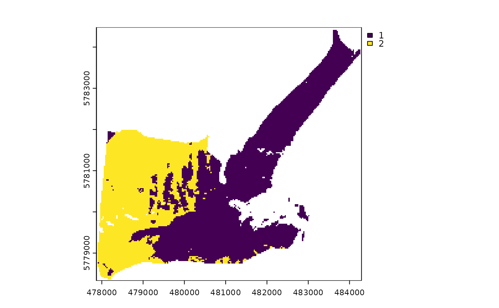
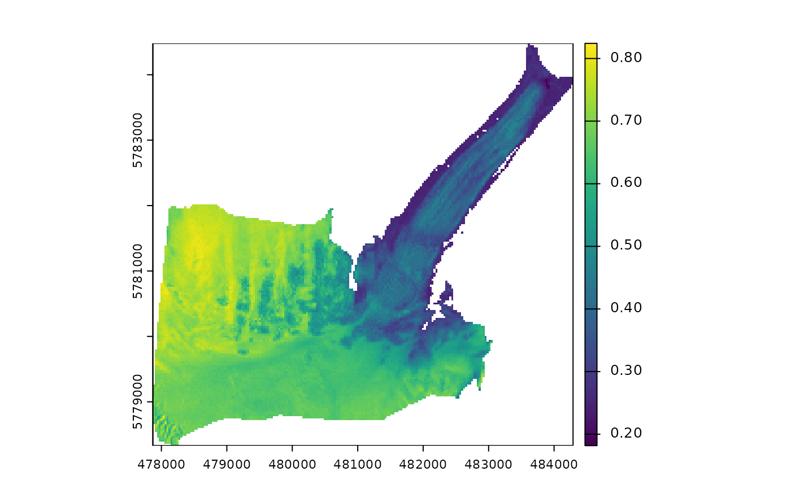

This function calculates narrowband and broadband albedo from surface reflectance data. The albedo retrieval method includes corrections for the anisotropic behavior of the reflected radiation field over snow and ice, and narrow-to-broadband albedo conversion algorithms.
Usage
albedo_sat(
SAA,
SZA,
VAA,
VZA,
slope,
aspect,
method,
blue = NULL,
green = NULL,
red = NULL,
NIR = NULL,
SWIR1 = NULL,
SWIR2 = NULL,
th
)Arguments
- SAA
SpatRaster or numeric. Solar azimuth angle in degrees.
- SZA
SpatRaster or numeric. Solar zenith angle in degrees.
- VAA
SpatRaster or numeric. Satellite sensor azimuth angle in degrees.
- VZA
SpatRaster or numeric. Satellite sensor zenith angle in degrees.
- slope
SpatRaster or numeric. Surface slope in degrees.
- aspect
SpatRaster or numeric. Surface aspect in degrees.
- method
character. Number of spectral bands to calculate broadband albedo. There are three options available: "twobands" (green and near-infrared), "fourbands" (blue, green, red, near-infrared), and "fivebands" (blue, red, near-infrared, shortwave-infrared 1, and shortwave-infrared 2). If
method="twobands"ormethod="fivebands", surface reflectance data is corrected for anisotropy before generating broadband albedo. In contrast,method="fourbands"assumes Lambertian reflection and converts surface reflectance to broadband albedo directly. More details and examples about these workflows can be found in the references below.- blue
SpatRaster. Blue band surface reflectance (0.43-0.45 um). Required for
method="fourbands"andmethod="fivebands".- green
SpatRaster. Green band surface reflectance (0.53-0.59 um). Required for all methods.
- red
SpatRaster. Red band surface reflectance (0.64-0.67 um). Required for
method="fourbands"andmethod="fivebands".- NIR
SpatRaster. Near-infrared surface reflectance (0.85-0.88 um). Required for all methods.
- SWIR1
SpatRaster. Shortwave-infrared surface reflectance (1.57-1.65 um). Required for
method="fivebands".- SWIR2
SpatRaster. Shortwave-infrared surface reflectance (2.11-2.29 um). Required for
method="fivebands".- th
numeric. NDSII threshold to discriminate between snow and ice.
Value
Returns a SpatRaster with four layers for method="twobands", five layers for
method="fourbands" and six layers for method="fivebands". These layers are:
If
method="twobands": green and NIR narrowband albedo, broadband albedo, and quality flags indicating whether broadband albedo was calculated using the corrected green and NIR narrowband albedos (flag=1) or the NIR albedo only (flag=2). Broadband albedo values higher than one are not excluded for this method.If
method="fourbands": blue, green, red, and NIR surface reflectance and broadband albedo. Broadband albedo values higher than one and lower than zero are masked out.If
method="fivebands": blue, red, NIR, SWIR1, SWIR2 narrowband albedo, and broadband albedo. Broadband albedo values higher than one and lower than zero are masked out.
Notes
If method="fourbands" is used, it is not necessary to call the following arguments:
SAA, SZA, VAA, VZA, slope, aspect, and th.
References
Feng S, Cook JM, Anesio AM, Benning LG, Tranter M (2023).
“Long time series (1984–2020) of albedo variations on the Greenland ice sheet from harmonized Landsat and Sentinel 2 imagery.”
Journal of Glaciology, 1–16.
doi:10.1017/jog.2023.11
.
Klok EJ(, Greuell W, Oerlemans J (2003).
“Temporal and spatial variation of the surface albedo of Morteratschgletscher, Switzerland, as derived from 12 Landsat images.”
Journal of Glaciology, 49(167), 491–502.
doi:10.3189/172756503781830395
.
Ren S, Miles ES, Jia L, Menenti M, Kneib M, Buri P, McCarthy MJ, Shaw TE, Yang W, Pellicciotti F (2021).
“Anisotropy parameterization development and evaluation for glacier surface albedo retrieval from satellite observations.”
Remote Sensing, 13(9), 1714.
doi:10.3390/rs13091714
.
Examples
library(terra)
outline <- system.file("extdata/athabasca_outline.shp", package = "SatRbedo")
blue <- system.file("extdata/athabasca_B02_20200911.tif", package = "SatRbedo")
green <- system.file("extdata/athabasca_B03_20200911.tif", package = "SatRbedo")
red <- system.file("extdata/athabasca_B04_20200911.tif", package = "SatRbedo")
nir <- system.file("extdata/athabasca_B8A_20200911.tif", package = "SatRbedo")
swir1 <- system.file("extdata/athabasca_B11_20200911.tif", package = "SatRbedo")
swir2 <- system.file("extdata/athabasca_B12_20200911.tif", package = "SatRbedo")
dem <- system.file("extdata/athabasca_dem.tif", package = "SatRbedo")
blue <- preproc(grd = blue, outline = outline)
green <- preproc(grd = green, outline = outline)
red <- preproc(grd = red, outline = outline)
nir <- preproc(grd = nir, outline = outline)
swir1 <- preproc(grd = swir1, outline = outline)
swir2 <- preproc(grd = swir2, outline = outline)
dem <- preproc(grd = dem, outline = outline)
SAA <- 164.8
SZA <- 48.9
VAA <- 90.9
VZA <- 5.2
slope <- terra::terrain(dem, v = "slope", neighbors = 4, unit = "degrees")
aspect <- terra::terrain(dem, v = "aspect", neighbors = 4, unit = "degrees")
# Broadband albedo using green and near-infrared surface reflectance data
th <- snow_or_ice(green, nir)$th
alb <- albedo_sat(
SAA = SAA, SZA = SZA, VAA = VAA, VZA = VZA,
slope = slope, aspect = aspect, method = "twobands",
green = green, NIR = nir, th = th
)
plot(alb[[3]]) # Broadband albedo
plot(alb[[4]]) # Flags

# Broadband albedo using blue, green, red and near-infrared surface reflectance data
alb <- albedo_sat(
method = "fourbands",
blue = blue, green = green, red = red, NIR = nir
)
plot(alb[[5]]) # Broadband albedo

# Broadband albedo using blue, red, near-infrared, and shortwave-infrared surface reflectance data
th <- snow_or_ice(green, nir)$th
alb <- albedo_sat(
SAA = SAA, SZA = SZA, VAA = VAA, VZA = VZA,
slope = slope, aspect = aspect, method = "fivebands",
blue = blue, green = green, red = red, NIR = nir, SWIR1 = swir1, SWIR2 = swir2, th = th
)
plot(alb[[6]]) # Broadband albedo